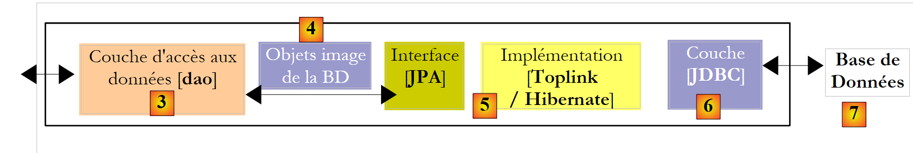
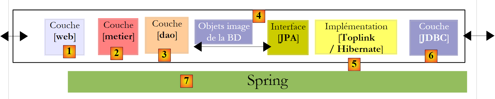
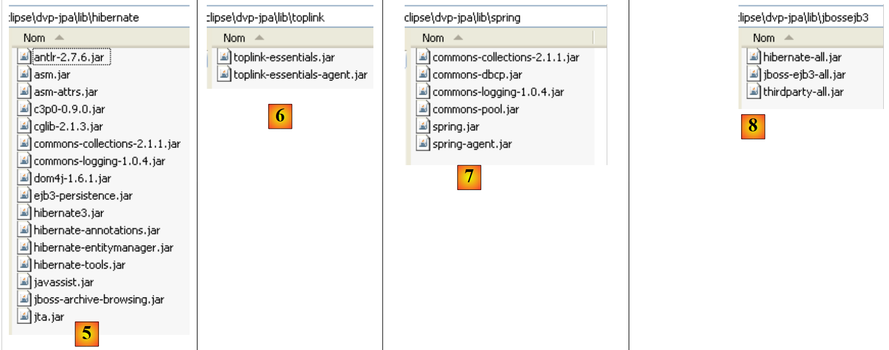
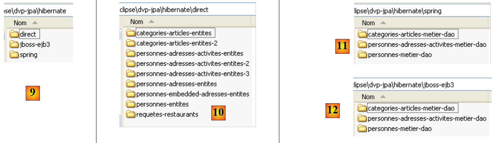

1. Introduction
1.1. Objectifs
Le PDF du document est disponible |ICI|.
Les exemples du document sont disponibles |ICI|.
On se propose ici de découvrir les concepts principaux de la persistance de données avec l'API JPA (Java Persistence Api). Après avoir lu ce document et en avoir testé les exemples, le lecteur devrait avoir acquis les bases nécessaires pour voler ensuite de ses propres ailes.
L'API JPA est récente. Elle n'a été disponible qu'à partir du JDK 1.5. La couche JPA a sa place dans une architecture multi-couches. Considérons une telle architecture assez répandue, celle à trois couches :
 |
- la couche [1], appelée ici [ui] (User Interface) est la couche qui dialogue avec l'utilisateur, via une interface graphique Swing, une interface console ou une interface web. Elle a pour rôle de fournir des données provenant de l'utilisateur à la couche [2] ou bien de présenter à l'utilisateur des données fournies par la couche [2].
- la couche [2], appelée ici [metier] est la couche qui applique les règles dites métier, c.a.d. la logique spécifique de l'application, sans se préoccuper de savoir d'où viennent les données qu'on lui donne, ni où vont les résultats qu'elle produit.
- la couche [3], appelée ici [dao] (Data Access Object) est la couche qui fournit à la couche [2] des données pré-enregistrées (fichiers, bases de données, ...) et qui enregistre certains des résultats fournis par la couche [2].
- la couche [JDBC] est la couche standard utilisée en Java pour accéder à des bases de données. C'est ce qu'on appelle habituellement le pilote Jdbc du SGBD.
De multiples efforts ont été faits pour faciliter l'écriture des ces différentes couches par les développeurs. Parmi ceux-ci, JPA vise à faciliter l'écriture de la couche [dao], celle qui gère les données dites persistantes, d'où le nom de l'API (Java Persistence Api). Une solution qui a percé ces dernières années dans ce domaine, est celle d'Hibernate :
 |
La couche [Hibernate] vient se placer entre la couche [dao] écrite par le développeur et la couche [Jdbc]. Hibernate est un ORM (Object Relational Mapping), un outil qui fait le pont entre le monde relationnel des bases de données et celui des objets manipulés par Java. Le développeur de la couche [dao] ne voit plus la couche [Jdbc] ni les tables de la base de données dont il veut exploiter le contenu. Il ne voit que l'image objet de la base de données, image objet fournie par la couche [Hibernate]. Le pont entre les tables de la base de données et les objets manipulés par la couche [dao] est faite principalement de deux façons :
- par des fichiers de configuration de type XML
- par des annotations Java dans le code, technique disponible seulement depuis le JDK 1.5
La couche [Hibernate] est une couche d'abstraction qui se veut la plus transparente possible. L'idéal visé est que le développeur de la couche [dao] puisse ignorer totalement qu'il travaille avec une base de données. C'est envisageable si ce n'est pas lui qui écrit la configuration qui fait le pont entre le monde relationnel et le monde objet. La configuration de ce pont est assez délicate et nécessite une certaine habitude.
La couche [4] des objets, image de la BD est appelée "contexte de persistance". Une couche [dao] s'appuyant sur Hibernate fait des actions de persistance (CRUD, create - read - update - delete) sur les objets du contexte de persistance, actions traduites par Hibernate en ordres SQL. Pour les actions d'interrogation de la base (le SQL Select), Hibernate fournit au développeur, un langage HQL (Hibernate Query Language) pour interroger le contexte de persistance [4] et non la BD elle-même.
Hibernate est populaire mais complexe à maîtriser. La courbe d'apprentissage souvent présentée comme facile est en fait assez raide. Dès qu'on a une base de données avec des tables ayant des relations un-à-plusieurs ou plusieurs-à-plusieurs, la configuration du pont relationnel / objets n'est pas à la portée du premier débutant venu. Des erreurs de configuration peuvent alors conduire à des applications peu performantes.
Dans le monde commercial, il existait un produit équivalent à Hibernate appelé Toplink :
 |
Devant le succès des produits ORM, Sun le créateur de Java, a décidé de standardiser une couche ORM via une spécification appelée JPA apparue en même temps que Java 5. La spécification JPA a été implémentée par les deux produits Toplink et Hibernate. Toplink qui était un produit commercial est devenu depuis un produit libre. Avec JPA, l'architecture précédente devient la suivante :
 |
La couche [dao] dialogue maintenant avec la spécification JPA, un ensemble d'interfaces. Le développeur y a gagné en standardisation. Avant, s'il changeait sa couche ORM, il devait également changer sa couche [dao] qui avait été écrite pour dialoguer avec un ORM spécifique. Maintenant, il va écrire une couche [dao] qui va dialoguer avec une couche JPA. Quelque soit le produit qui implémente celle-ci, l'interface de la couche JPA présentée à la couche [dao] reste la même.
Ce document va présenter des exemples JPA dans divers domaines :
- tout d'abord, nous nous intéresserons au pont relationnel / objet que la couche ORM construit. Celui-ci sera créé à l'aide d'annotations Java 5 pour des bases de données dans lesquelles on trouvera des relations entre tables de type :
- un à un
- un à plusieurs
- plusieurs à plusieurs
Pour illustrer ce domaine, nous créerons des architectures de test suivantes :
 |
Nos programmes de tests seront des applications console qui interrogeront directement la couche JPA. Nous découvrirons à cette occasion les principales méthodes de la couche JPA. Nous serons dans un environnement dit "Java SE" (Standard Edition). JPA fonctionne à la fois dans un environnement Java SE et Java EE5 (Edition Entreprise).
- lorsque nous maîtriserons à la fois la configuration du pont relationnel / objet et l'utilisation des méthodes de la couche JPA, nous reviendrons à une architecture multi-couches plus classique :
 |
La couche [JPA] sera accédée via une architecture à 2 couches [metier] et [dao]. Le framework Spring [7], puis le conteneur EJB3 de JBoss seront utilisés pour lier ces couches entre-elles.
Nous avons dit plus haut que JPA était disponible dans les environnements SE et EE5. L'environnement Java EE5 délivre de nombreux services dans le domaine de l'accès aux données persistantes notamment les pools de connexion, les gestionnaire de transactions, ... Il peut être intéressant pour un développeur de profiter de ces services. L'environnement Java EE5 n'est pas encore très répandu (mai 2007). On le trouve actuellement sur le serveurs d'application Sun Application Server 9.x (Glassfish). Un serveur d'application est essentiellement un serveur d'applications web. Si on construit une application graphique autonome de type Swing, on ne peut disposer de l'environnement EE et des services qu'il apporte. C'est un problème. On commence à voir des environnements EE "stand-alone", c.a.d. pouvant être utilisés en-dehors d'un serveur d'applications. C'est le cas de JBos EJB3 que nous allons utiliser dans ce document.
Dans un environnement EE5, les couches sont implémentées par des objets appelés EJB (Enterprise Java Bean). Dans les précédentes versions d'EE, les EJB (EJB 2.x) sont réputés difficiles à mettre en oeuvre, à tester et parfois peu-performants. On distingue les EJB2.x "entity" et les EJB2.x "session". Pour faire court, un EJB2.x "entity" est l'image d'une ligne de table de base de données et EJB2.x "session" un objet utilisé pour implémenter les couches [metier], [dao] d'une architecture multi-couches. L'un des principaux reproches faits aux couches implémentées avec des EJB est qu'elles ne sont utilisables qu'au sein de conteneurs EJB, un service délivré par l'environnement EE. Cela rend problématiques les tests unitaires. Ainsi dans le schéma ci-dessus, les tests unitaires des couches [metier] et [dao] construits avec des EJB nécessiteraient la mise en place d'un serveur d'application, une opération assez lourde qui n'incite pas vraiment le développeur à faire fréquemment des tests.
Le framework Spring est né en réaction à la complexité des EJB2. Spring fournit dans un environnement SE un nombre important des services habituellement fournis par les environnements EE. Ainsi dans la partie "Persistance de données" qui nous intéresse ici, Spring fournit les pools de connexion et les gestionnaires de transactions dont ont besoin les applications. L'émergence de Spring a favorisé la culture des tests unitaires, devenus d'un seul coup beaucoup plus faciles à mettre en oeuvre. Spring permet l'implémentation des couches d'une application par des objets Java classiques (POJO, Plain Old/Ordinary Java Object), permettant la réutilisation de ceux-ci dans un autre contexte. Enfin, il intègre de nombreux outils tiers de façon assez transparente, notamment des outils de persistance tels que Hibernate, Ibatis, ...
Java EE5 a été conçu pour corriger les lacunes de la précédente spécification EE. Les EJB 2.x sont devenus les EJB3. Ceux-ci sont des POJOs tagués par des annotations qui en font des objets particuliers lorsqu'ils sont au sein d'un conteneur EJB3. Dans celui-ci, l'EJB3 va pouvoir bénéficier des services du conteneur (pool de connexions, gestionnaire de transactions, ...). En-dehors du conteneur EJB3, l'EJB3 devient un objet Java normal. Ses annotations EJB sont ignorées.
Ci-dessus, nous avons représenté Spring et JBoss EJB3 comme infrastructure (framework) possible de notre architecture multi-couches. C'est cette infrastructure qui délivrera les services dont nous avons besoin : un pool de connexions et un gestionnaire de transactions.
- avec Spring, les couches seront implémentées avec des POJOs. Ceux-ci auront accès aux services de Spring (pool de connexions, gestionnaire de transaction) par injection de dépendances dans ces POJOs : lors de la construction de ceux-ci, Spring leur injecte des références sur les services dont il vont avoir besoin.
-
JBoss EJB3 est un conteneur EJB pouvant fonctionner en-dehors d'un serveur d'application. Son principe de fonctionnement (pour le développeur) est analogue à celui décrit pour Spring. Nous trouverons peu de différences.
-
nous terminerons le document avec un exemple d'application web à trois couches, basique mais néanmoins représentative :
 |
1.2. Références
[ref1] : Java Persistence with Hibernate, de Christian Bauer et Gavin King, chez Manning.
[ref1] est le document qui a servi de fondement à ce qui suit. C'est un livre exhaustif de plus de 800 pages sur l'utilisation de l'ORM Hibernate dans deux contextes différents : avec ou sans JPA. L'utilisation d'Hibernate sans JPA est en effet toujours d'actualité pour les développeurs utilisant un JDK 1.4 ou inférieur, JPA n'étant apparu qu'avec le JDK 1.5.
Ayant lu plus des trois-quarts du livre, et survolé le reste, il m'est apparu que tout était utile dans ce document. L'utilisateur averti d'Hibernate devrait connaître la quasi-totalité des informations données dans les 800 pages. Christian Bauer et Gavin King ont été exhaustifs mais rarement pour décrire des situations qu'on ne rencontrera jamais. Tout est à lire. Le livre est écrit de façon pédagogique : il y a une réelle volonté de ne rien laisser dans l'obscurité. Le fait qu'il ait été écrit pour une utilisation d'Hibernate à la fois avec et sans JPA est une difficulté pour ceux qui ne sont intéressés que par l'une ou l'autre de ces technologies. Par exemple, les auteurs décrivent, autour de nombreux exemples, le pont relationnel / objet dans les deux contextes. Les concepts utilisés sont très proches puisque JPA s'est fortement inspiré d'Hibernate. Mais ils présentent quelques différences. Si bien qu'une chose qui est vraie pour Hibernate peut ne plus l'être pour JPA et cela finit par créer de la confusion chez le lecteur.
Les auteurs montrent des exemples d'applications trois couches dans le contexte d'un conteneur EJB3. Ils ne parlent pas de Spring. Nous verrons sur un exemple que Spring est pourtant plus simple à utiliser et à visée plus globale que le conteneur JBoss EJB3 utilisé dans [ref1]. Néanmoins " Java Persistence with Hibernate" est un excellent livre que je conseille pour tous les fondamentaux qu'on y apprend sur les ORM.
Utiliser un ORM est complexe pour un débutant.
- il y a des concepts à comprendre pour configurer le pont relationnel / objet.
- il y a la notion de contexte de persistance avec ses notions d'objets dans un état "persisté", "détaché, "neuf"
- il y a la mécanique autour de la persistance (transactions, pools de connexions), généralement des services délivrés par un conteneur
- il y a les réglages à faire pour les performances (cache de second niveau)
- ...
Nous introduirons ces concepts sur des exemples. Nous ferons peu de développements théoriques autour de ceux-ci. Notre objectif est simplement, à chaque fois, de permettre au lecteur de comprendre l'exemple et de se l'approprier juqu'à être capable d'y amener lui-même des modifications ou de le rejouer dans un autre contexte.
1.3. Outils utilisés
Les exemples de ce document utilisent les outils suivants. Certains sont décrits en annexes (téléchargement, installation, configuration, utilisation). Dans ce cas, on donne le n° du paragraphe et la page.
- un JDK 1.6 (paragraphe 5.1)
- l'IDE de développement Java Eclipse 3.2.2 (paragraphe 5.2)
- plugin Eclipse WTP (Web Tools Package) (paragraphe 5.2.3)
- plugin Eclipse SQL explorer (paragraphe 5.2.6)
- plugin Eclipse Hibernate Tools (paragraphe 5.2.5)
- plugin Eclipse TestNG (paragraphe 5.2.4)
- conteneur de servlets Tomcat 5.5.23 (paragraphe 5.3)
- SGBD Firebird 2.1 (paragraphe 5.4)
- SGBD MySQL5 (paragraphe 5.5)
- SGBD PosgreSQL (paragraphe 5.6)
- SGBD Oracle 10g Express (paragraphe 5.7)
- SGBD SQL Server 2005 Express (paragraphe 5.8)
- SGBD HSQLDB (paragraphe 5.9)
- SGBD Apache Derby (paragraphe 5.10)
- Spring 2.1 (paragraphe 5.11)
- conteneur EJB3 de JBoss (paragraphe 5.12)
1.4. Téléchargement des exemples
Sur le site de ce document, les exemples étudiés sont téléchargeables sous la forme d'un fichier zip, qui une fois décompressé, donne naissance au dossier suivant :
 |
- en [1] : l'arborescence des exemples
- en [2] : le dossier <annexes> contient des éléments présentés dans la partie ANNEXES, paragraphe 5. En particulier, le dossier <jdbc> contient les pilotes Jdbc des SGBD utilisés pour les exemples du tutoriel.
- en [3] : le dossier <lib> regroupe en 5 dossiers les différentes archives .jar utilisées par le tutoriel
- en [4] : le dossier <lib/divers> regroupe les archives : - des pilotes Jdbc des SGBD - de l'outil de test unitaire [testNG] - de l'outil de logs [log4j]
 |
- en [5] : les archives de l'implémentation JPA/Hibernate et d'outils tierces nécessairesà Hibernate
- en [6] : les archives de l'implémentation JPA/Toplink
- en [7] : les archives de Spring 2.x et d'outils tierces nécessaires à Spring
- en [8] : les archives du conteneur EJB3 de JBoss
 |
- en [9] : le dossier <hibernate> regroupe les exemples traités avec la couche de persistance JPA/Hibernate
- en [10] : le dossier <hibernate/direct> regroupe les exemples où la couche JPA est exploitée directement avec un programme de type [Main].
- en [11] et [12] : des exemples où la couche JPA est exploitée via des couches [metier] et [dao] dans une architecture multi-couches, ce qui est le cas normal d'exploitation. Les services (pool de connexions, gestionnaire de transactions) utilisés par les couches [metier] et [dao] sont fournis soit par Spring [11] soit par JBoss EJB3 [12].
 |
- en [13] : le dossier <toplink> reprend les exemples du dossier <hibernate> [9] mais avec cette fois une couche de persistance JPA/Toplink au lieu de JPA/Hibernate. Il n'y a pas dans [13] de dossier <jbossejb3> car il n'a pas été possible de faire fonctionner un exemple où la couche de persistance est assurée par Toplink et les services assurés par le conteneur EJB3 de JBoss.
- en [14] : un dossier <web> regroupe trois exemples d'applications web avec une couche de persistance JPA :
- [15] : un exemple avec Spring / JPA / Hibernate
- [16] : le même exemple avec Spring / JPA / Toplink
- [17] : le même exemple avec JBoss EJB3 / JPA / Hibernate. Cet exemple ne fonctionne pas, probablement pour un problème de configuration non élucidé. Il a été néanmoins laissé afin que le lecteur puisse se pencher dessus et éventuellement trouver une solution à ce problème.
Le tutoriel fait souvent référence à cette arborescence, notamment lors des tests des exemples étudiés. Le lecteur est invité à télécharger ces exemples et à les installer. Par la suite, nous appellerons <exemples>, l'arborescence des exemples décrite ci-dessus.
1.5. Configuration des projets Eclipse des exemples
Les exemples utilisent des bibliothèques "utilisateur". Ce sont des archives .jar réunies sous un même nom. Lorsqu'on inclut une telle bibliothèque dans le classpath d'un projet Java, toutes les archives qu'elle contient sont alors incluses dans ce classpath. Voyons comment procéder sous Eclipse :
 |
- en [1] : [Window / Preferences / Java / Buld Path / User Libraries]
- en [2] : on crée une nouvelle bibliothèque
- en [3] : on lui donne un nom et on valide
 |
- en [4] : on va sélectionner les jars qui feront partie de la bibliothèque [jpa-divers]
- en [5] : on sélectionne tous les jars du dossier <exemples>/lib/divers
 |
- en [6] : la bibliothèque utilisateur [jpa-divers] a été définie
- en [7] : on refait la même démarche pour créer 4 autres bibliothèques :
Bibliothèque | Dossier des jars de la bibliothèque |
<exemples>/lib/hibernate | |
<exemples>/lib/toplink | |
<exemples>/lib/spring | |
<exemples>/lib/jbossejb3 |